Active Directory is a Microsoft directory service that manages and organizes resources including users, computers, and other devices. I wanted to gain experience with this service and decided to create an Active Directory lab in Microsoft Azure.
What is the point of learning Active Directory? Many companies with Windows-based infrastructure rely on it heavily to manage users, computers, and resources across their network. Even as organizations move to the cloud, understanding it will help me manage hybrid environments where both on-premises and cloud identity services are used.
This is part 1 of a series where I learn about Active Directory and its features.
Step 1: Create a Resource Group
I needed to create a resource group that would hold the resources I needed for the project. The purpose of a resource group is to organize and group resources, simplifying management. If needed, I could delete the resources group and it would delete the resources associated with it. It made cost management easier. I was able to set up a budget for my resource group, which helped me track the costs of my resources.
Step 2: Create a Virtual Network (VNet) and Subnets
Inside of my resource group, I created a virtual network to host my virtual machines. In this step, I edited the default subnet range so that it fell within the defined range of the IPv4 address space of the virtual network. I provisioned Azure Bastion within my virtual network, creating my AzureBastionSubnet. AzureBastionSubnet is the mandatory subnet for the Azure Bastion service and it needs at least a /26 address range. The purpose of Azure Bastion was to provide a secure RDP connection to my VMs. RDP stands for Remote Desktop Protocol and allows users to remotely access and control a computer over a network. Note that with Azure Bastion, my VMs didn’t need a public IP address and I didn’t need to open any inbound ports.
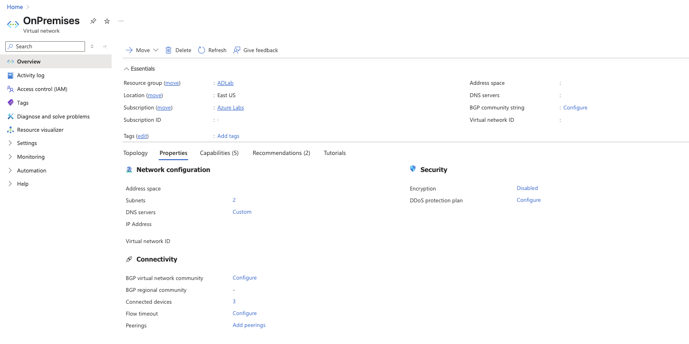
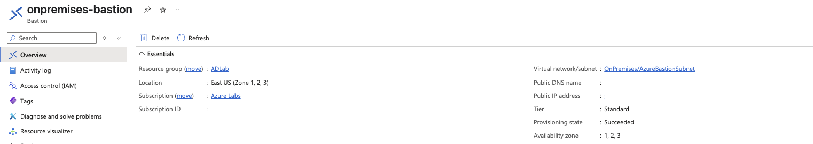
Step 3: Deploy Virtual Machines for Domain Controllers
Next, I set up two virtual machines with the Windows Server 2019 image that will serve as my domain controllers. A domain controller is a server that responds to authentication requests from users and computers. These domain controllers will host Active Directory and its services. I launched the virtual machines in an availability set to ensure high availability and a lower risk of a single point of failure. I also changed the default size of the VMs to Standard B1ms to optimize cost.

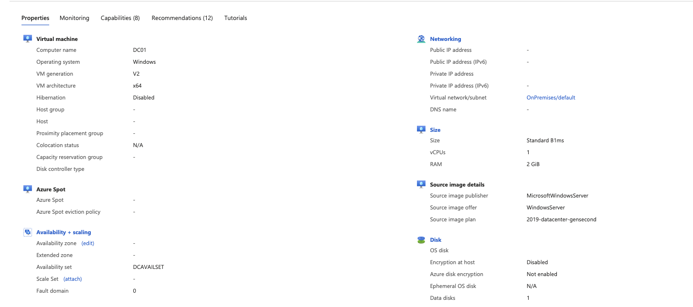
Step 4: Deploy Bastion
After I navigated to my VNet and selected Bastion, I deployed the service into my AzureSubnetBastion I created earlier. This will automatically created a public IP for the Bastion service itself. From there, I was able to connect to it from my browser using my VM username and password.
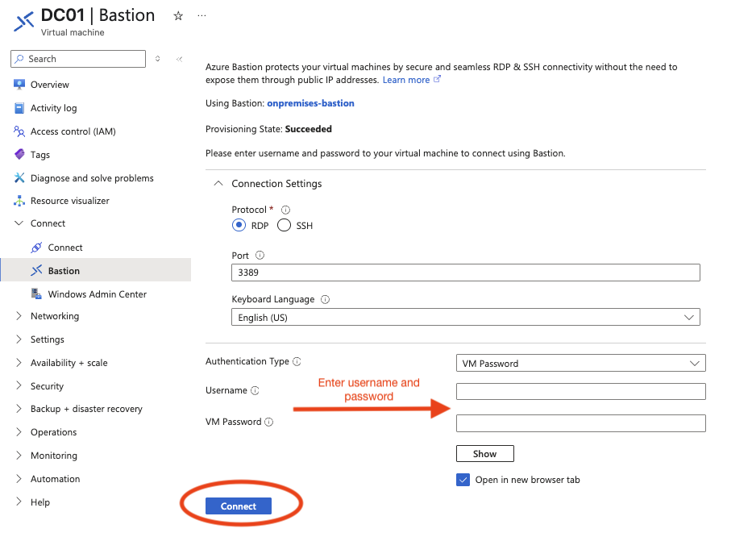
Step 5: Configure the first domain controller
Once I connected to my VM, the Server Manager dashboard opened up. From the dashboard, I went to Computer Management > Disk Management to configure my disk. This disk hosted my Active Directory. Then, I went to Manage > Add Roles and Features, I went through the screens shown here to install Active Directory Domain Services. First, I choose role-based configuration. Then, I selected my destination server. Next, I checked off Active Directory Domain Services as my server role. Note that I already have this installed.
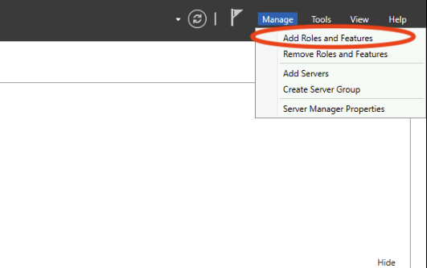
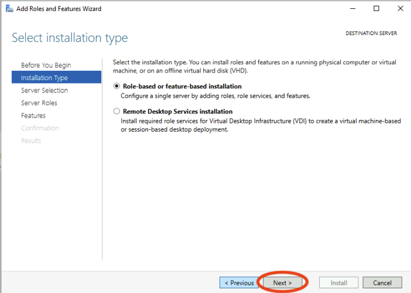
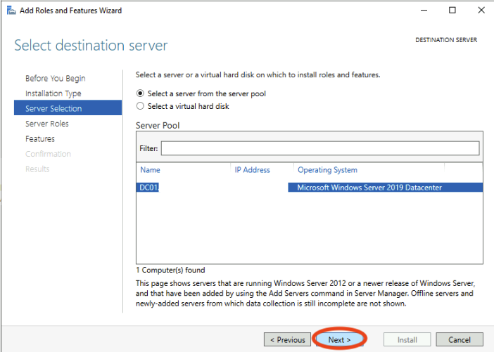
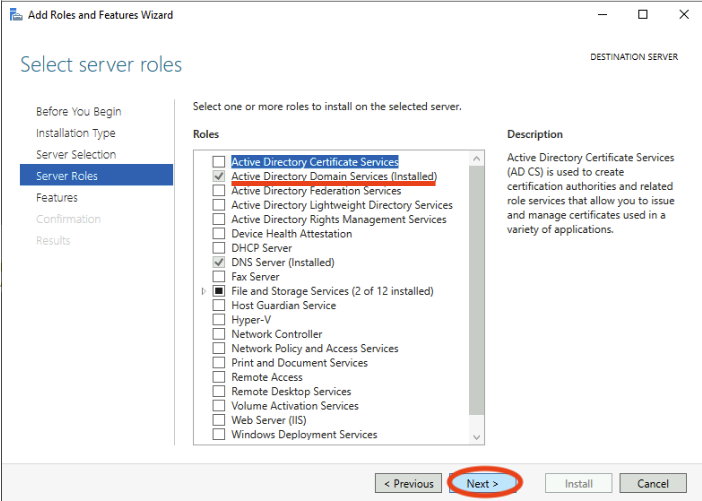
Step 6: Promote the first domain controller
Promoting the domain controller simply means that converting a server into a domain controller. Because I already have this installed, I decided to grab screenshots I took from a Udemy course that helped me with this step. On the installation progress page, I selected the “Promote Your Server…” that you see underlined. In the Deployment Configuration panel, I added a new forest, which is the top level of organization within Active Directory. The forest contains domains, users, devices, etc in Active Directory. In this step, I specified my root domain name. Next, in the Domain Controller Options panel, I made my domain controller a DNS server by checking it off. For the Paths panel, I changed my disk paths to reflect the the disk configuration I did earlier.
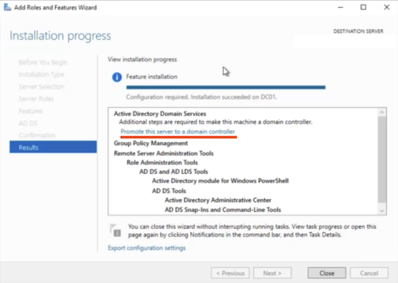
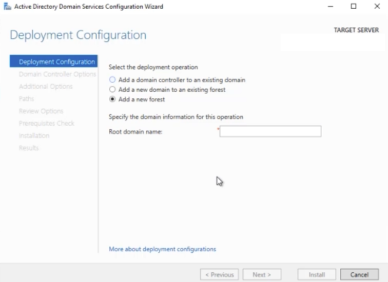
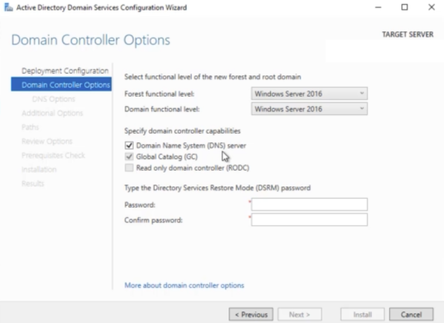
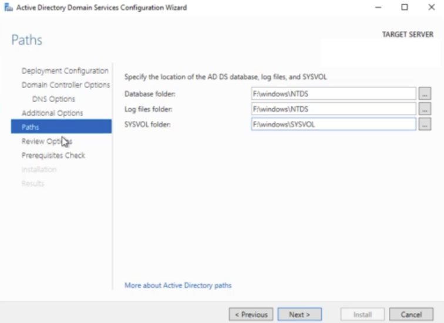
After this step, my connection restarted. While my connection was restarting, I changed my Private IP for my domain controller from Dynamic to Static to ensure that my private IP address never changes. This private IP is important because it served as a DNS server for my Active Directory, is necessary to promote the second domain controller and needs to be able to read the DNS of my root domain name.
Step 7: Configure DNS
I went back to my VNet’s settings in Azure, changing the DNS servers from a public DNS to a Custom server using the private IP address of my first domain controller. This will ensure that the VMs in the VNet resolve my domain name. I restarted my VMs to make sure that this change was picked up.
Step 8: Promote & Configure second domain controller
I combined these two steps because setting up my second domain controller was the same as the first with a few exceptions. First, in the ‘Deployment Configuration’ panel shown above, I chose the ‘Add a domain controller to an existing domain’ option. Then, I supplied the credentials I created for the first domain controller. After the second domain controller was configured and promoted, I configured the DNS like I did with the first one. The purpose of creating a second domain controller is for redundancy. If my first domain controller goes down, my network will still operate because I have a second one.
Step 9: Create a User
I wanted to test out my environment to see if I would be able to create a test user. From the Server Manager dashboard, I went to Tools > Active Directory Users and Computers. Next, I went to my domain, navigated to my Users folder and began the process of creating a new user. 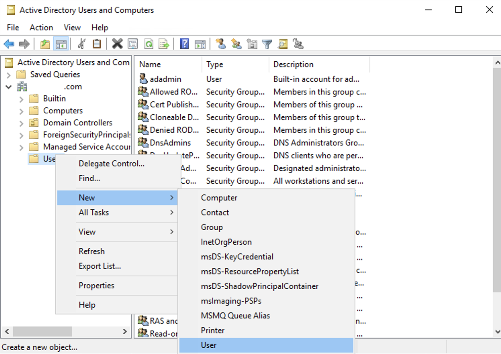
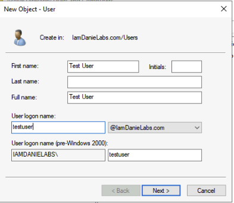
I went through the screens to create my new user. And, just like that my new user was created! When I switch between domain controllers, the user I created reflected on both servers. This is an example of replication in Active Directory. If I’m working off of different domain controllers, changes like user creation get synced across the environment.
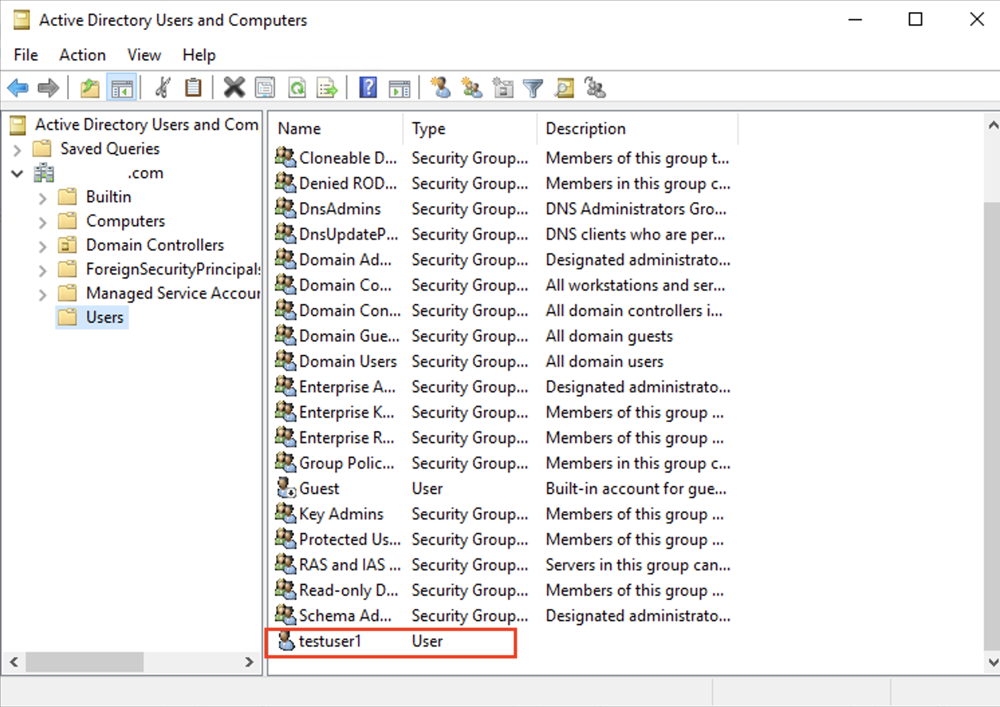
Step 10: Joining a Client Machine to the Domain
I launched a third VM with the Windows Server 2022 image. This will serve as my client machine. I made sure to launch it in the same resource group as that holds my other resources(domain controller, network, etc). I then used Azure Bastion to connect to my VM.
Inside my client VM, I opened the Control Panel and navigated to Network and Internet > Network and Sharing Center. Then after clicking the Ethernet icon, I set the DNS Server to the private IP address of my first domain controller. This is so this machine could find the root domain I created.
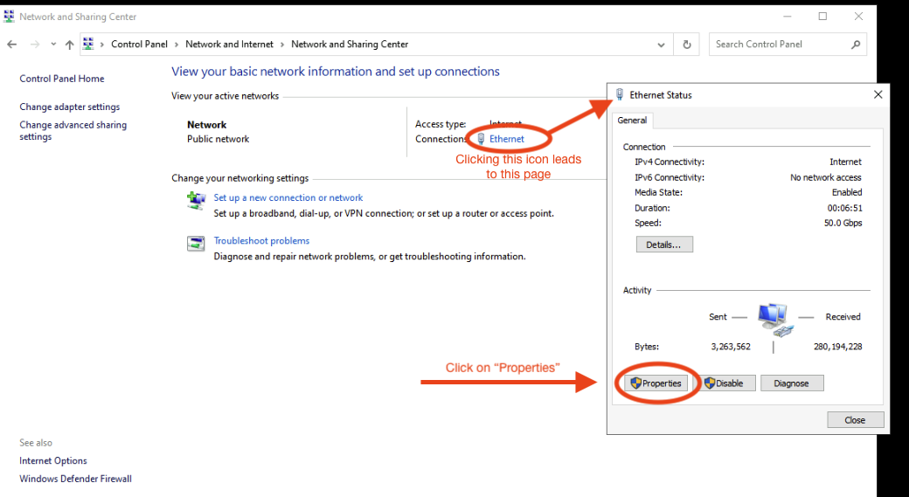
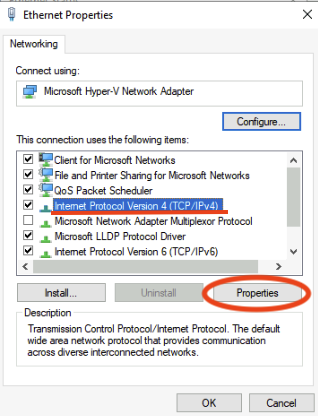
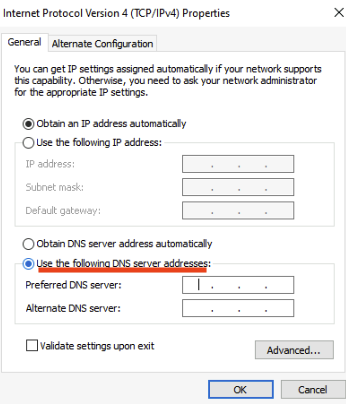
I joined the the domain by once again opening the Control Panel and this time navigating to System & Security. From there, a page opened up and I went to Advanced System Settings > Computer Name > Change… >Member of Domain. I entered the root domain name I created earlier. After a few seconds, a prompt appeared where I entered the credentials of my first domain controller. Seconds after that I received a message welcoming me to my domain.
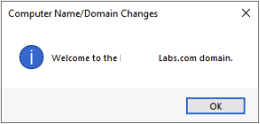
After hitting okay, another message appeared letting me know that the machine had to restart before the changes took affect. After the reboot, I verified the domain login using nslookup. I also tried my hand in using Powershell to accomplish this same task.
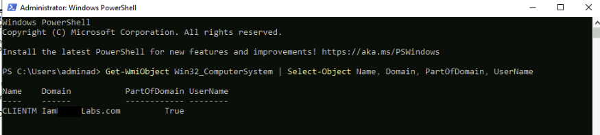
That is all for part 1! Through building this lab, not only did I learn about Active Directory but I gained a better understanding of networking. I learned a more secure way of connection to virtual machines using Bastion. A lesson I’ll remember is that using RDP to connect to virtual machines exposes RDP ports and this is considered a security risk. This lab was great because it introduced me to Powershell. I plan to use Powershell for future labs and projects so I am dedicating my time to learning it.